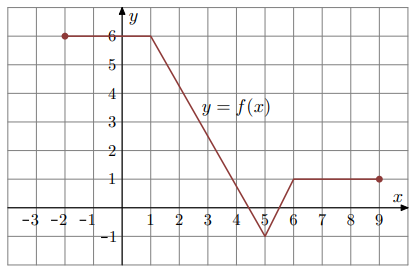

Własności funkcji
Pusta bańka na mleko o pojemności 10 litrów ma masę 6,5 kg. Jeden litr mleka ma masę 1,03 kg. Niech x oznacza liczbę litrów mleka w tej bańce, a f(x) oznacza wyrażoną w kilogramach masę bańki wraz z mlekiem,
gdzie x ∈ <0,10>
Oceń prawdziwość poniższych stwierdzeń. Wybierz P, jeśli stwierdzenie jest prawdziwe, albo F – jeśli jest fałszywe.
Największa wartość funkcji f jest równa
Funkcja y=f(x) jest określona za pomocą tabeli:
| x: | −6 | −4 | −2 | 0 | 2 | 4 | 6 | y: | −3 | −4 | 4 | 1 | 5 | 0 | 2 |
|---|
Uzupełnij poniższą tabelę. Wpisz w każdą pustą komórkę tabeli właściwą odpowiedź, wybraną spośród A–E.
| Największa wartość funkcji f jest równa | |
|---|---|
| Miejsce zerowe funkcji f jest równe |
W kartezjańskim układzie współrzędnych (x, y) narysowano wykres funkcji y=f(x) (zobacz rysunek).
Funkcja f jest rosnąca w przedziale
W kartezjańskim układzie współrzędnych (x, y) narysowano wykres funkcji y = f(x) (zobacz rysunek).
Uzupełnij tabelę. Wpisz w każdą pustą komórkę tabeli właściwą odpowiedź, wybraną spośród A–F.
Dziedziną funkcji f jest zbiór
Zbiorem wartości funkcji f jest zbiór
A. <−3, −1> ∪ <1, 3>
B. (−3, 3)
C. (−3, −1) ∪ (1, 3)
D. <−5, −1> ∪ <1, 5>
E. (−5, 5)
F. (−5, −1) ∪ (1, 5)
Zbiór wartości:
Zapisz poniżej zbiór wszystkich rozwiązań nierówności f(x) < −1.
W kartezjańskim układzie współrzędnych (x, y) narysowano wykres funkcji y = f(x).
Dziedziną funkcji f jest zbiór
Największa wartość funkcji f w przedziale <−4, 1> jest równa
Funkcja f jest malejąca w zbiorze
Na rysunku, w kartezjańskim układzie współrzędnych (x, y), przedstawiono wykres funkcji f określonej dla każdego x ∈ <−5, 4). Na tym wykresie zaznaczono punkty o współrzędnych całkowitych.
Oceń prawdziwość poniższych stwierdzeń. Wybierz P, jeśli stwierdzenie jest prawdziwe, albo F – jeśli jest fałszywe.
Najmniejsza wartość funkcji f w przedziale <−4, 0) jest równa
Basen ma długość 25 m. W najpłytszym miejscu jego głębokość jest równa 1,2 m.
Przekrój podłużny basenu przedstawiono poglądowo na rysunku.
Głębokość y basenu zmienia się wraz z odległością x od brzegu w sposób opisany funkcją:
Odległość x jest mierzona od płytszego brzegu (rysunek).
Największa głębokość basenu jest równa
Oblicz wartość współczynnika a oraz wartość współczynnika b. Należy posłużyć się kropką, by oddzielić liczbę całkowitą od dziesiętnej np. "2.5".
Na rysunku jest przedstawiony fragment wykresu funkcji \( y = f(x) \).

W przedziale \((-4, 6)\) równanie \( f(x) = -1 \)
Na rysunku przedstawiono wykres funkcji \( f \).
Iloczyn \( f(-3) \cdot f(0) \cdot f(4) \) jest równy
Na rysunku przedstawiono wykres funkcji \( f \) określonej w zbiorze \((-1, 7)\).
Wskaż zdanie prawdziwe.
Funkcja \( f \) jest określona wzorem \[ f(x) = \frac{x^2}{2x - 2}, \quad x \neq 1. \] Wtedy dla argumentu \( x = \sqrt{3} - 1 \) wartość funkcji f jest równa
Do wykresu funkcji \( f(x) = 3x - 2 \) należy punkt o współrzędnych
Na wykresie przedstawiono wykres funkcji \( f \).
Wskaż zdanie prawdziwe.
Funkcja f każdej liczbie naturalnej \( n \geq 1 \) przyporządkowuje resztę z dzielenia tej liczby przez 4. Zbiorem wartości funkcji f jest
Rysunek przedstawia wykres funkcji f zbudowany z 6 odcinków, przy czym punkty B = (2, −1) i C = (4, 1) należą do wykresu funkcji.
Równanie \( f(x) = -1 \) ma
Funkcja f jest określona wzorem \[ f(x) = \frac{-2(x+2)-1}{(x-3)^2}, \quad x \neq -2. \] Wartość funkcji f dla argumentu 2 jest równa
Funkcja f jest określona wzorem \[ f(x) = \frac{2x - 8}{x}, \quad x \neq 0. \] Wówczas wartość funkcji \( f(\sqrt{2}) \) jest równa
Na rysunku przedstawiono wykres funkcji \( f \).
Funkcja f jest rosnąca w przedziale
Na rysunku przedstawiono wykres funkcji \( f \).
Zbiorem wartości funkcji jest
Wykorzystaj przedstawiony poniżej wykres funkcji \( f \).
Dziedziną funkcji f jest przedział
Największą wartością funkcji f jest
Funkcja f, określona dla wszystkich liczb całkowitych dodatnich, przyporządkowuje liczbie x ostatnią cyfrę jej kwadratu. Zbiór wartości funkcji f zawiera dokładnie
Funkcja f przyporządkowuje każdej liczbie naturalnej większej od 1 jej największy dzielnik będący liczbą pierwszą. Spośród liczb: f(42), f(44), f(45), f(48) największa to
Na rysunku przedstawiono wykres funkcji \( y = f(x) \).
Największa wartość funkcji f w przedziale \(\langle -1, 1 \rangle\) jest równa
Wykorzystaj przedstawiony poniżej wykres funkcji \( f \).
Zbiorem wartości funkcji f jest przedział
Przedziałem, w którym funkcja f przyjmuje tylko wartości ujemne, jest
Na rysunku przedstawiony jest wykres funkcji \( y = f(x) \).
Zbiorem wartości tej funkcji jest
Wykorzystaj przedstawiony poniżej wykres funkcji \( f \).
Zbiorem wartości funkcji f jest
Korzystając z wykresu funkcji f, wskaż nierówność prawdziwą
Na rysunku jest przedstawiony wykres funkcji \( y = f(x) \).
Które równanie ma dokładnie trzy rozwiązania?
Dana jest funkcja \( f(x) = x^3 - b - 5\sqrt{2} \) dla każdej liczby rzeczywistej \(x\). Miejscem zerowym funkcji f jest \(x = \sqrt{2} + 1\). Współczynnik b we wzorze funkcji f jest równy
Dana jest funkcja \( y=f(x) \), której wykres przedstawiono w kartezjańskim układzie współrzędnych (x, y) na rysunku obok. Ta funkcja jest określona dla \(x \in \langle -3,5 \rangle\).
Funkcje g oraz h są określone za pomocą funkcji f następująco:
\(y = g(x) = f(x+2)\), \(\quad y=h(x)=f(-x)\)
Na rysunkach A–F przedstawiono wykresy różnych funkcji – w tym wykresy funkcji g oraz h.
Każdej z funkcji \(y=g(x)\) oraz \(y=h(x)\) przyporządkuj jej wykres. Wpisz obok symboli funkcji w tabeli poniżej właściwe odpowiedzi wybrane spośród A–F.
| Funkcja | Rysunek |
|---|---|
| y = g(x) | |
| y = h(x) |
Dana jest funkcja \( y=f(x) \) określona dla \(x \in \langle -1,8 \rangle\), której wykres jest przedstawiony na rysunku:
Wskaż zbiór wartości tej funkcji
W kartezjańskim układzie współrzędnych (x, y) przedstawiono fragmenty wykresów czterech funkcji: f, g, h, s.
Największą wartość dla argumentu x = 2 przyjmuje funkcja
Dla argumentu x=3 tę samą wartość przyjmują funkcje
Zapisz maksymalny przedział, w którym prawdziwa jest nierówność g(x) > h(x).